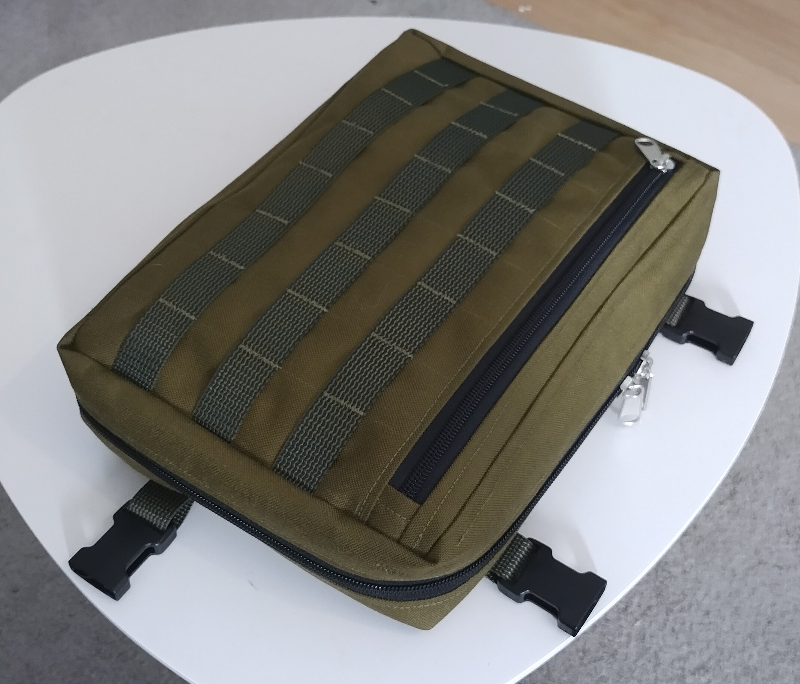

Kit Bag#
The Kit Bag has proven to be incredibly useful so far, and can be used in many ways.
In my view, the purpose of a kit bag is to keep you pockets mostly empty, and to make sure that all you small important things have a dedicated place where they are supposed to be and are easy to find and get access to. Typicall the kit bag is worn on the chest as part of you backpack or rucksack.

Features#
two pockets on both the anterior and posteriot panel interior faces
Dual dlastic webbing organizer on both anterior and posterior panel interior faces
Elastic is layerd with 8cm wide elasitc with 3 inch partitions, and 3cm wide elastic with 1.5 inch partitions
partitioning allows to find suitable size slot for most items
could maybe use a few 1.5/4 inch slots for very small items, e.g the last slot on the 3mm elasitc webbings
This is one of my favourite pieces of gear I have sewn so far.
Materials#
Main exterior fabric: 1000D PU coated Foxdura
https://www.shelbyoutdoor.com/product_info.php?products_id=7668
Carry harness and Sewing PALS webbing: Savotta PES webbing, green
buckles: ITW NEXUS 25 mm side release buckles
https://www.varusteleka.fi/fi/product/itw-classic-sr-pistosolki-musta/31888
https://www.varusteleka.fi/fi/product/itw-classic-sr-pistosolki-musta/31888
YKK #8 coil zippers
tape: https://www.shelbyoutdoor.com/product_info.php?cPath=402_31_54_561&products_id=4483
pulls: https://www.shelbyoutdoor.com/product_info.php?cPath=402_31_54_561&products_id=8498
Inner pocket: “Strong mesh”
https://www.shelbyoutdoor.com/product_info.php?cPath=402_22_99&products_id=8227
Inner pocket edges & internal attachment loops: “Edge binding 20mm PP” supplied by Shelby outdoor
https://www.shelbyoutdoor.com/product_info.php?products_id=107
Elastic webbing for organizer: generic “soft elasitc tape” Eurokangas
https://www.eurokangas.fi/kuminauha-pehmea-80mm-musta-5516083m100
https://www.eurokangas.fi/kuminauha-pehmea-30mm-50m-musta-5511040m100
zipper pulls: mammut accessory cord (3mm)
https://varuste.net/p2655/mammut-hammer-cord-3-mm-naru
The usefulness of the PALS webbing on the anterior panel is questionable, at least I have not yet used it yet for anything other than my headlamp. But it does serve a parctical purpose in making the pack anterior panel more rigid. This is important when its carried in the sternum pack configuration, which allows you to open the pack 90 degrees into a kind of table. If the anterior panel is not rigid enough it will fold in on itself and the pack doesn’t open the way it is supposed to.
The anterior panel has a flat zipper pocket for quick access. I tend to keep a map in that pocket, as well as the webbing for the carry harness/shoulder strap when they are not being used.
The main pocket zipper zips all the way around to the bottom of the bag. This is so that when you are not wearing the bag you can put it on the ground and it opens up as a flat tray to give easy access to the contents. This configuration is very nice for example when cooking. Especially once it gets dark it’s nice that all little items have their own for you to put them back where they belong.
There are three main ways to carry this pack
standalone harness
backpack harness
shoulder bag